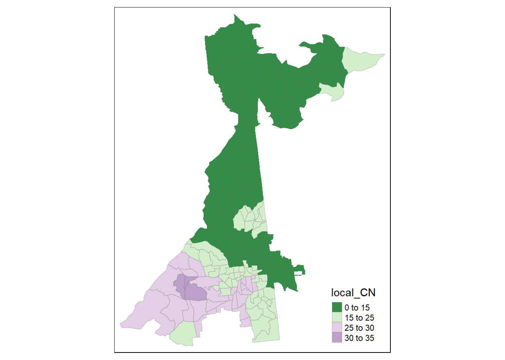
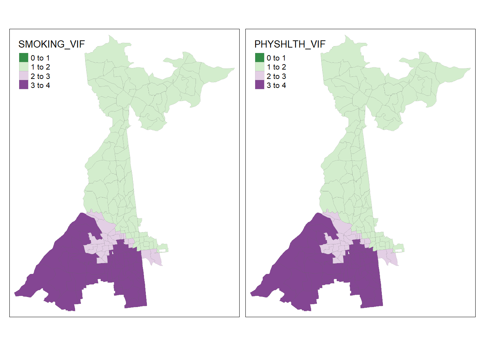
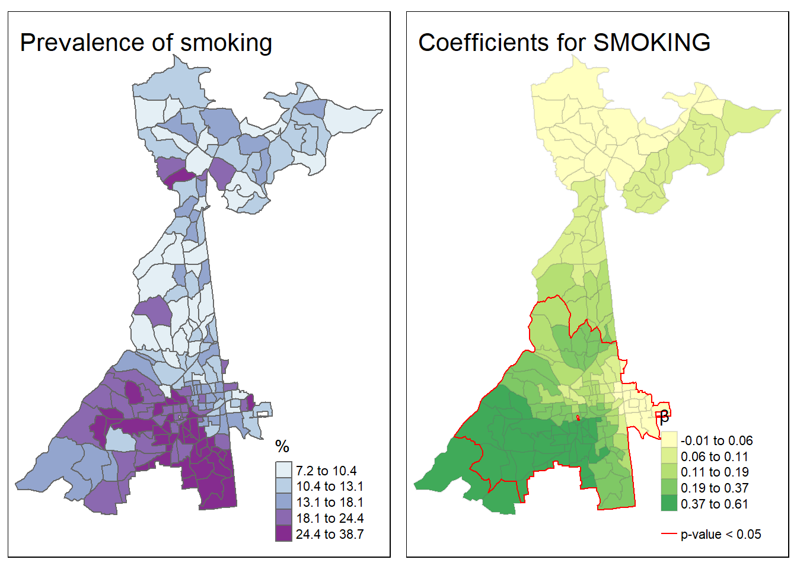
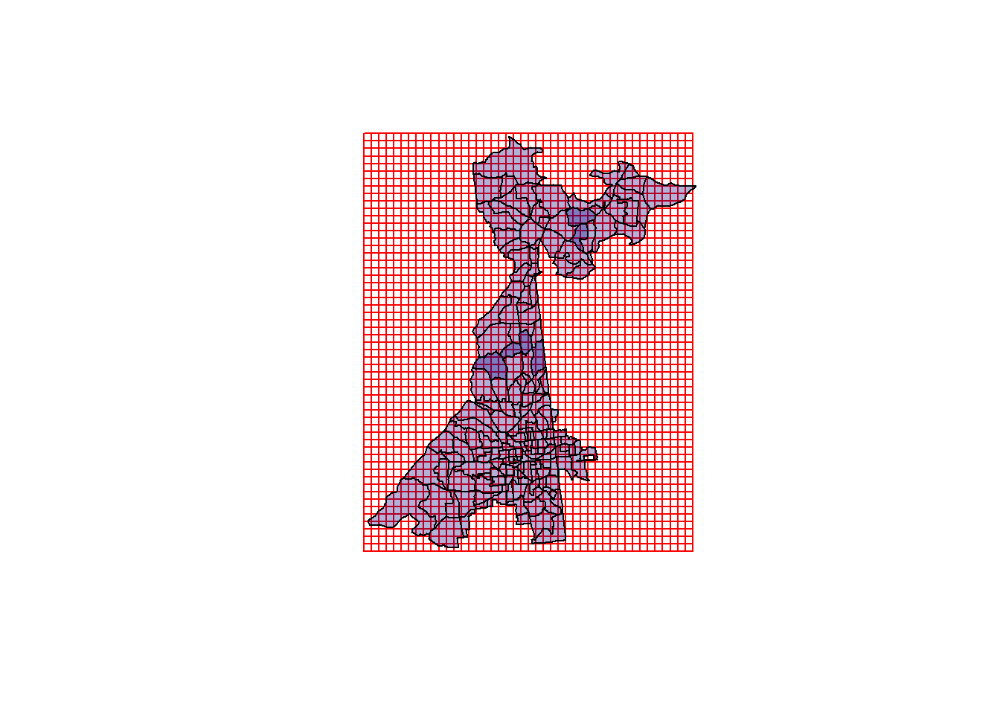
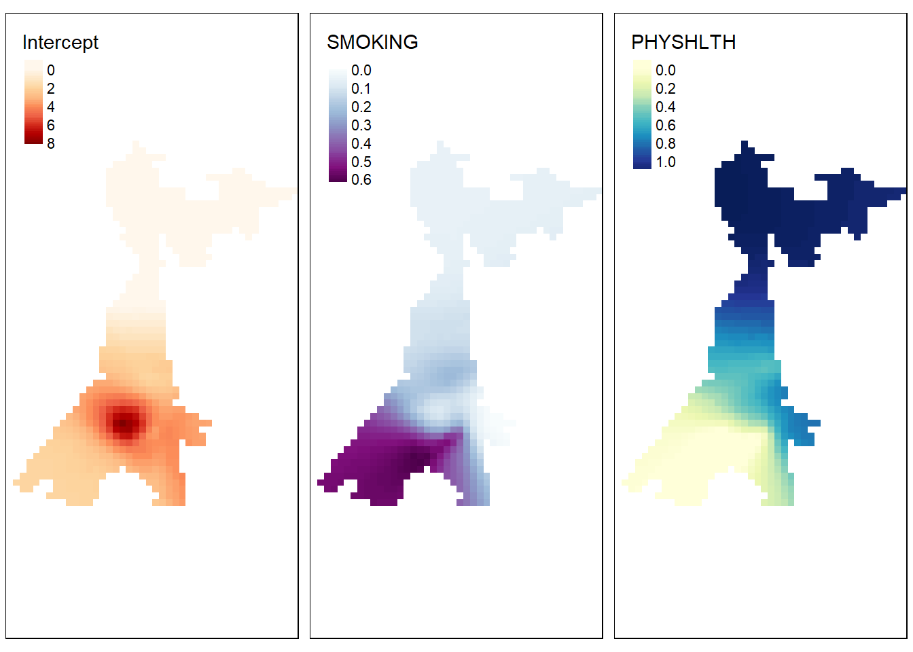

Week 11 Spatial Regression II
11.1 Getting Ready, w11
11.1.1 Learning objectives, w11
| After this module you should be able to… |
|---|
| Explain and relate spatial non-stationarity to epidemiologic concepts of heterogeneity |
| Use geographically weighted regression to produce and interpret epidemiologic parameters from point and polygon data |
11.1.2 Important Vocabulary, w11
| Term | Definition |
|---|---|
| 1st order process | Statistical measures where units taken one at a time. Spatial heterogeneity is about how the mean intensity varies for each unit, and is therefore primarily about first order process |
| 2nd order process | Statistical measures where units considered at least two at a time. Spatial dependence is about correlation or relatedness between units and is therefore about 2nd order processes |
| Geographically weighted regression | A multivariable regression that is re-fit for multiple sub-regions within a study area, typically weighting the observations using a kernel density function. The goal of GWR is to identify statistical evidence for non-stationarity (e.g. does a locally varying regression fit the data better than a single global model, after penalizing for multiple comparisons?) and if present to quantify their values and spatial patterns. |
| Stationarity vs non-stationarity | Stationary' statistics are those for which the global value is true for all sub-groups (e.g. sub-population or places). In contrast, non-stationarity is when the value of a given statistic is not singularly global, but in fact depends on the sub-group (e.g. populatio or location). Spatia non-stationarity can refer to disease intensity (e.g. spatial heterogeneity) or to variable relationships (e.g. spatially varying coefficients). |
11.2 Spatially varying relationships
11.2.1 Non-stationarity in context of spatial epidemiology
The latter half of the course has focused on how to estimate, describe, and test for epidemiologically relevant spatial structure or spatial heterogeneity in population health data. Briefly these have been the topics covered following the introductory Epidemiologic Cartography module:
- Disease mapping of spatial heterogeneity to describe epidemiologically meaningful patterns of disease over space, possibly even in the presence of sparse data that reduces certainty and precision of estimates. The tools of disease mapping focused on stabilizing and smoothing parameter estimates, possibly in formal testing for statistical deviation from expectations, and contrasting local rates to global rates (e.g. SMRs).
- Global and local spatial auto correlation as ways to describe the tendency for univariate data (e.g. health outcomes) to be spatially dependent. These tests described the degree to which (and in the case of local tests, the location where) outcomes clustered in space. Spatial auto correlation is a fundamental characteristic of spatial structure, and thus very useful in exploring and describing data. Importantly, testing for spatial auto correlation does not explain why population events are spatially dependent or clustered.
- Spatial scan statistics were a class of tests designed as an alternative (or complementary) tool for testing for the presence of spatially-clustered health events. While spatial auto correlation tested explicitly for spatial-dependence between locations, spatial scan statistics tested for statistically unusual extreme rates or risks of disease within arbitrarily small/large search windows. In that way spatial scan statistics describe spatial structure through the lens of spatial homogeneity (constant risk) or heterogeneity. However, spatial scan statistics share with spatial auto correlation statistics the lack of explanatory insight as to how or why disease intensity varies in space.
- Spatial auto correlation tests of aspatial regression residuals was the first step towards describing spatial structure as a function of multi-dimensional (multiple variable) predictors. By fitting multivariable regression models that could include predictors that might explain the reason for spatial structure, this approach began the intersection of multivariable regression with spatial structure. This approach to spatializing aspatial regression is a useful exploratory or diagnostic step, which could result in sufficient insight to understand why or how spatial structure is generated. However, often residual spatial auto correlation in residuals exists after inclusion of important measured variables, and the question remains: What produces residual dependence?
This brings us to geographically weighted statistics. While the order of topics covered above is written in a somewhat hierarchical or linear-sequential manner (each step follows and expands on the preceding), the course of analysis is not always this way. In particular, geographically weighted statistics are not the culmination of all spatial analysis to date, but instead represent an alternative way to view the data generating process.
11.2.2 Introducing geographically weighted regression
Stationarity is the assumption that a statistic or parameter estimate is, on average, constant or homogenous across samples. By extension, spatial stationarity is the assumption that a statistic for a given study region is constant regardless of the spatial location. Examples of spatial non-stationarity were previously introduced with geographically weighted summary statistics (e.g. in Disease Mapping 3), and more generally with the idea of spatially heterogeneous mean intensity of disease, as was tested with the spatial scan statistic or Poisson tests of excess risk. This notion that some places have higher and some places have lower risk or rates suggests that a single global statistic (e.g. the overall risk or rate) is not adequate for describing the health of the population; instead a set of local statistics are needed.
Spatially non-stationary disease intensity (e.g. spatial heterogeneity) is an example of first order spatial variation. In this context, ‘first order’ refers to the first statistical moment which is the mean expected value. So first order spatial variation is a variation in the mean disease rate. But we may also be interested in second order spatial variation, which refers not to the mean, but to the covariance among variables. Therefore, second order spatial processes reflect an interest in whether relationships among variables are constant (global; stationary) or heterogeneous (local; non-stationary).
Geographically weighted regression (GWR) is the natural extension to geographically weights summary statistics when we wish to go from single variable mean intensity (first order process) to describe multivariable covariance patterns (second order process) in space. GWR is quite simply multivariable regression carried out iteratively with restrictions to specific geographic sub-sets of the entire study region, with an interest in estimating not just a single set of regression coefficients, \(\beta\), but instead a set of coefficients with one for each geographic sub-region (e.g. \(\beta_{x,y}\)}).
Just as we had tools for statistically testing whether the spatial intensity (e.g. rate, prevalence) of disease was homogeneous versus heterogeneous, we can similarly use statistical tests to compare the fit of the global (stationary) regression model to the fit of the local (non-stationary) model. If there is evidence of better fit, even after penalty for multiple comparisons, then we can proceed with interpreting results from the GWR.
Geographically weighted regression is therefore a powerful tool for further characterizing or understanding the data generating process. It provides insight into spatial relationships by a) permitting local analysis of multivariable relationships; and b) statistically testing whether a single global model fits the data better or worse than an ensemble of local models, even after penalizing for multiple comparison. While this tool represents a significant step forward in our ability as spatial epidemiologists to understand spatial variation in population health – even accounting for confounding and heterogeneity of effects – the methods have several well-described limitations that collectively lead us to treat GWR as an exploratory tool:
- Local multi-collinearity: Regression with highly colinear (highly correlated) predictor variables can produce statistically unstable regression coefficients due to variance inflation. In a single global dataset there may be sufficient distinction among variables to avoid this problem. However – because covariates may be spatially clustered – it is common that collinearity is a greater problem when restricting to specific sub-regions. Thus, GWR estimates could suffer from bias related to variance inflation and instability.
- Multiple comparison: It is evident that the analytic strategy of GWR is to re-fit a regression model multiple times, once for each sub-region in a study area. This quite reasonably raises concerns for multiple comparisons, particularly if statistical hypothesis tests are being conducted.
- Model overfitting: A known concern in regression modeling is that coefficients can be biased when the model begins to describe the ‘random error’ rather than the underlying relationships, reducing the generalizability of coefficients. This can occur from including too many covariates for a given number of observations, and therefore the process of restricting the geographic region for model fitting in GWR can lead to local overfitting.
- Local sensitivity to outliers: In global regression, we are aware that it is possible for single extreme observations to have undue influence on the estimation of regression coefficient. In linear regression, residual diagnostics focus on influence statistics to diagnose this problem. With GWR, the refitting of a model in multiple subsets of the data increases the risk that at least some of the local fits will be unduly influenced by outlier observations.
- Bandwidth selection: Just as we discussed when introducing kernel density estimation in Disease Mapping, a key driver of results when using kernel density functions to smooth or weight data is the bandwidth. Bandwidth is the radius of the kernel search area. In GWR, the kernel bandwidth defines how many observations (and with what weight) will be included in each local regression. A larger bandwidth will include more of the total data, but will limit the amount of spatial variation in coefficients. In contrast a smaller bandwidth will include less data in each fit but maximize the possible identification of local spatial variation.
11.2.3 Making epidemiologic meaning of spatially varying coefficients
Although spatial heterogeneity has been a theme throughout this course, it may not be obvious what exactly heterogeneity in regression coefficients means or tells us as epidemiologists. One analogy – and to be clear it is only an imperfect analogy and not an exact correspondence – is to conceive of spatially varying regression coefficients as akin to statistical interaction in non-spatial models.
In epidemiology, a powerful and important concept for describing causal effects of exposures or interventions on health outcomes, is that of effect measure modification. This is the idea that the causal effect of an exposure on the outcome is not homogenous (e.g. constant; stationary), but instead varies or depends on the value of a second covariate (e.g. is heterogeneous or non-stationary). An example of effect measure modification in non-spatial epidemiology would be if the magnitude of the causal effect of a drug treatment for preventing death in a given disease was larger in women as compared to men.
While it is common for analysts of epidemiologic data to incorporate interaction terms in multivariable regression in an effort to identify and estimate effect measure modification, it is important to recall that statistical interaction is not always (or perhaps is rarely) an indicator of causal effect measure modification. However, statistical interactions are tests for the idea of heterogeneity or variation in the magnitude (e.g. on an additive or multiplicative scale depending on the model being fit) of relationship or association between predictor and outcome.
Therefore, interpreting the spatially varying coefficients from a geographically weighted regression could be seen to be similar as interpreting the heterogeneous correlation evidenced by a statistical interaction in a non-spatial model: it describes where and to what degree the association between exposure and outcome differs or varies. If the statistical interaction were in fact identifying a causal process, it would be a form of spatial effect measure modification, or identification of how something about location modifies the relationship between exposure and outcome.
11.2.4 Distinguishing variation in prevalence from variation in correlation
One final conceptual challenge in interpreting spatially varying coefficients (and for interpreting statistical interactions in general) is to be clear about the role of spatially varying covariate prevalence as compared to the role of spatially varying correlation of covariate with outcome.
The GWR describes geographic regions where the magnitude of association between predictor/covariate and outcome is larger or smaller. However, that should not be confused with the overall prevalence of the predictor in those areas. For example, examine the maps below illustrating the prevalence of smoking and poor physical health in Atlanta census tracts (top two panels) as compared to the strength of association between each covariate and prevalence of poor mental health (bottom two panels).
FIGURE 11.1: GWR: Prevalence vs. Correlation
The interpretation of regression coefficients is "the change in \(Y\) for each one-unit change in \(X\)’. Therefore, what we see is that the prevalence of poor mental health increases more for every 1-unit increase in smoking prevalence in the southern part of the map as compared with the northern. On the other hand the prevalence of poor mental health increases more for every 1-unit increase in prevalence of poor physical health in census tracts in the northern part of the map.
However, when combined with the prevalence information, we can see that meaning of ‘one-unit change’ should be in the context of the variation in the covariates themselves. While the magnitude of association between poor physical health and poor mental health appears strongest in the north, those census tracts actually have quite low prevalence of poor physical health.
The point of this illustration is to consider whether your interest is in relative variation in magnitude of association, or the population impact which itself is related to baseline prevalence. Either could be relevant, but considering both prevalence and correlation/association provides more context.
11.3 Estimating geogrpahically weighted regression models
11.3.1 Packages and Data
There are at least four packages that provide functions for geographically weighted regression: McSpatial, gwrr, spgwr, and GWModel. We will be using the latter package, GWModel as it has much of the functionality of others, with additional diagnostic and model form capabilities.
library(GWmodel) # For geographically-weighted statistics
library(sf) # For managing spatial data class sf
library(sp) # For managing spatial data class sp
library(tmap) # For mapping results
library(dplyr) # For data workflow
library(raster) # For converting spatial grid to raster in final sectionThis example will use a dataset previously introduced in Lab. The 500-Cities Project is part of a Robert Wood Johnson and CDC effort to increase availability of small-area health data. More information is available at the link below. Briefly, the project uses data from each state’s Behavioral Risk Factor Surveillance System (BRFSS) survey to estimate small area (census tract) prevalence of 24 BRFSS indicators. The estimation process employed by CDC to create the dataset uses restricted-access geocodes, as well as some model-interpolation assumptions.
The data are only available for select locations, and in the Atlanta area the census tracts available are in the cities of: Atlanta, Johns Creek, Sandy Springs, and Roswell. In addition to the BRFSS data, I have included exposure measures from other public-use data sets as indicated in the Data Dictionary below.
These data are at the geographic level of census tracts (although 500-cities actually estimates down to the census block group). The values for each measure (e.g. poor mental health, smoking, etc) are tract-specific prevalence. In other words these are purely ecologic data, and thus all regression below is ecologic analysis. While this has been true for most exercises this semester, it is particularly important to keep this fact in mind as we begin conducting multivariable regression.
11.3.1.1 Data Dictionary
| Variable | Description | Source |
|---|---|---|
FIPS |
Census tract ID | |
PopulationCount |
Count of tract pop | 500-cities, BRFSS |
INSURANCE |
Prevalence uninsured (18+) | 500-cities, BRFSS |
SMOKING |
Prevalence current smoking (18+) | 500-cities, BRFSS |
MENTALHLTH |
Prevalence poor mental health > 14 days (18+)m | 500-cities, BRFSS |
MentalHlthCOUNT |
(Estimated) count of poor mental health >14 days | Calculated from 500-cities, BRFSS |
PHYSHLTH |
Prevalence poor physical health > 14 days (18+) | 500-cities, BRFSS |
ParkProximity_std |
Distance to nearest park (z-score) | Opportunity Index |
Vacancy_std |
Prevalence vacant housing (z-score) | Opportunity Index |
HealthAccess_std |
# Health facilities within 2-miles (z-score) | Opportunity Index |
Foreclosure_std |
Prevalence foreclosure, 2010 (z-score) | Opportunity Index |
Poverty_std |
Poverty rate (z-score) | Opportunity Index |
PovertyRate |
Poverty rate (%) | USDA Food Access Research Atlas |
MedianFamilyIncome |
Median Income in tract ($) | USDA Food Access Research Atlas |
PctSeniors |
Ratio of seniors (65+) to total population (%) | USDA Food Access Research Atlas |
InstabilityStress |
Summed z-score from Foreclosure & Vacancy | Derived from Opportunity Index |
geometry |
Census tract polygon geom | US Census bureau |
11.3.2 Preparing for using GWModel
GWModel package through the use of geographically weighted summary statistics in Disease Mapping 3. You might revisit that section (and the Part B lab from Disease Mapping 3), for a review of using kernel density weighting to produce locally smoothed mean intensity and correlation statistics.
The GWModel package has not been updated to accommodate sf class spatial data in R yet. For that reason, it is necessary for us to convert the sf data to the sp class. Furthermore, the way the kernel density estimator evaluates which regions are versus are not in the ‘local’ region is by using a matrix of the distances between the centroid of every pair of census tracts (e.g. this is simply a different way of defining neighbors than what we used from the spdep package).
While each function in GWModel can calculate this distance matrix on the fly, because it will be needed so many times, it can be computationally efficient to calculate this distance matrix only once, and then simply provide the matrix to each function that needs it. Note that GWModel uses the distance matrix as an alternative to the spatial neighbor objects defined by the package spdep.
This code creates a sp object, then a large matrix that is \(185 X 185\), with each cell representing the Euclidean distance between pairs of tract centroids.
# Create a copy of data in the 'sp' format for use in some functions
atl.sp <- atl %>%
as('Spatial')
# Create distance matrix from centroids
atl.DM <- gw.dist(dp.locat = coordinates(atl.sp))11.3.3 Defining local: optimizing kernel bandwidths
Remember how we considered alternative definitions of local using kernel density estimates by changing the bandwidth of the kernel function? Recall the bandwidth is the radius of the search window, and the kernel is typically a bell-shaped curve (e.g. Gaussian or bi-square or similar). The GWModel package has many functions for using cross-validation (or AIC) to find an optimal (defined as best fitting) bandwidth for a given dataset. Unfortunately the best fit completely depends on the statistic being estimated. For that reason we may need to find a different bandwidth for each statistical test.
Just as with previous applications of kernel density functions, we can choose from a fixed or an adaptive bandwidth. Fixed bandwidth refers to a single kernel density radius to use in all parts of the study region. In contrast, adaptive bandwidth is a strategy to allow the radius to be adjusted to maintain a consistent amount of information, irrespective of changes in the population or area. In the case of GWModel, fixed bandwidths are defined in terms of the linear units of the map (e.g. meters in this case). In contrast adaptive bandwidths are defined by the number of units; therefore the kernel grows or shrinks in order to maintain a constant number of units ‘under’ the kernel function.
In Disease Mapping 3, we used the function bw.gwss.average() to find an optimal bandwidth that was specific to calculation of geographically weighted summary statistics. However, the optimal bandwidth can be different for each statistic of interest, and therefore the procedure for finding an optima for geographically weighted regression is different.
The function bw.gwr() uses cross-validation to find optimum bandwidth for a geographically weighted regression rather than summary statistics.
h.fixed <- bw.gwr(MENTALHLTH ~ SMOKING + PHYSHLTH,
data = atl.sp,
dMat = atl.DM)
h.adapt <- bw.gwr(MENTALHLTH ~ SMOKING + PHYSHLTH,
data = atl.sp,
adaptive = T,
dMat = atl.DM)## [1] 12082.4## [1] 59The optimal bandwidth for this specific regression model is either a fixed radius of 1.2082396^{4} meters, or else an adaptive bandwidth that always maintains 59 census tracts within the local region, regardless of their relative size (e.g. this is akin to k-nearest neighbors).
11.3.4 Geographically weighted regression
GWModel offers a wide range of modeling tools including geographically weighted linear regression, Poisson regression, binomial regression, and even local fitting options including adjustment for local heteroscedasticity, and local ridge regression which is robust to collinearity.
Because our outcome, MENTALHLTH is continuous and relatively normally distributed, basic linear geographically weighted regression will work.
The fitting of basic (meaning linear) GWR models is via the function gwr.basic(). Just as there are many functions in GWModel that begin with bw.x for estimating bandwidths, there are many functions that begins with gwr.x for fitting a variety of models. Look at the help documentation.
m <- gwr.basic(MENTALHLTH ~ SMOKING + PHYSHLTH,
data = atl.sp,
bw = h.adapt,
adaptive = T,
dMat = atl.DM)## ***********************************************************************
## * Package GWmodel *
## ***********************************************************************
## Program starts at: 2020-10-24 11:14:44
## Call:
## gwr.basic(formula = MENTALHLTH ~ SMOKING + PHYSHLTH, data = atl.sp,
## bw = h.adapt, adaptive = T, dMat = atl.DM)
##
## Dependent (y) variable: MENTALHLTH
## Independent variables: SMOKING PHYSHLTH
## Number of data points: 185
## ***********************************************************************
## * Results of Global Regression *
## ***********************************************************************
##
## Call:
## lm(formula = formula, data = data)
##
## Residuals:
## Min 1Q Median 3Q Max
## -3.4988 -0.9689 -0.1638 0.6708 5.7530
##
## Coefficients:
## Estimate Std. Error t value Pr(>|t|)
## (Intercept) 3.13908 0.28497 11.015 < 2e-16 ***
## SMOKING 0.16286 0.02830 5.754 3.64e-08 ***
## PHYSHLTH 0.50325 0.04137 12.166 < 2e-16 ***
##
## ---Significance stars
## Signif. codes: 0 '***' 0.001 '**' 0.01 '*' 0.05 '.' 0.1 ' ' 1
## Residual standard error: 1.451 on 182 degrees of freedom
## Multiple R-squared: 0.8523
## Adjusted R-squared: 0.8507
## F-statistic: 525.1 on 2 and 182 DF, p-value: < 2.2e-16
## ***Extra Diagnostic information
## Residual sum of squares: 383.1576
## Sigma(hat): 1.446982
## AIC: 667.704
## AICc: 667.9262
## ***********************************************************************
## * Results of Geographically Weighted Regression *
## ***********************************************************************
##
## *********************Model calibration information*********************
## Kernel function: bisquare
## Adaptive bandwidth: 59 (number of nearest neighbours)
## Regression points: the same locations as observations are used.
## Distance metric: A distance matrix is specified for this model calibration.
##
## ****************Summary of GWR coefficient estimates:******************
## Min. 1st Qu. Median 3rd Qu. Max.
## Intercept -1.4633747 -0.0771617 3.0706879 3.9759400 8.0903
## SMOKING -0.0074907 0.0599293 0.1369631 0.3200178 0.6134
## PHYSHLTH -0.1574946 0.1773786 0.5613934 0.9628009 1.1627
## ************************Diagnostic information*************************
## Number of data points: 185
## Effective number of parameters (2trace(S) - trace(S'S)): 27.10305
## Effective degrees of freedom (n-2trace(S) + trace(S'S)): 157.8969
## AICc (GWR book, Fotheringham, et al. 2002, p. 61, eq 2.33): 568.6092
## AIC (GWR book, Fotheringham, et al. 2002,GWR p. 96, eq. 4.22): 540.1906
## Residual sum of squares: 179.7807
## R-square value: 0.9307003
## Adjusted R-square value: 0.9187292
##
## ***********************************************************************
## Program stops at: 2020-10-24 11:14:44This procedure produces a lot of output! Examine the output above, and review some of the key points of interest:
- Check whether the local (GWR) model fits better than the global (aspatial) model by comparing the AICc from the global model at the top of the output to the AICc from the GWR at the bottom. The AICc is a fit statistics that penalizes for additional parameters, including the many parameters being estimated by repeating the model many times. Therefore we only find evidence of non-stationarity when the AICc for the GWR is smaller than then AICc for the global model (typically a difference in AICc of 3 or greater is sufficient to say the local model fits better). In this case the GWR fits much better than the global, suggesting significant non-stationarity in the relationships in this model.
- Next compare the magnitude of the regression coefficients in the global fit (top) to the range of coefficients in the GWR (lower portion of output). Which variables appear to vary the most? Using the interquartile comparison (e.g. comparing Q1 to Q3 of the range of coefficients), the absolute difference is greatest for
PHYSHLTH, althoughSMOKINGalso has substantial variation. - Look at the variance explained as summarized by the adjusted \(R^2\) value. Both the global and the GWR models explain a great deal of variance, but the GWR has a higher \(R^2\) of 0.93.
11.3.5 Checking local multi-collinearity
While collinearity is a possible concern in any regression model, its importance in GWR is heightened by the fact that the model is re-fit in geographic subsets of the data where variables would be anticipated to have higher correlation than in the study region at large (e.g. like things tends to be near like things). Multicollinearity does not bias results, but because of variance inflation can produce statistically unreliable (imprecise) estimates.
We can first carry out collinearity diagnostics on the model results, and then if we find evidence for concerning multicollinearity we could either alter the model (remove culprit covariates) or consider fitting model forms robust to collinearity including local ridge regression available via the function gwr.lcr().
For now we will begin with diagnostics. The function gwr.collin.diagno() returns the Condition Number and Variance Inflation Factor (VIF) from the model fit above.
collin <- gwr.collin.diagno(MENTALHLTH ~ SMOKING + PHYSHLTH,
data = atl.sp,
adaptive = T,
dMat = atl.DM,
bw = h.adapt)There is neither a print() nor a summary() function for the output of this function. However to see the output summarized as a spatial object we can look at the names of collin$SDF:
## [1] "SMOKING_VIF" "PHYSHLTH_VIF"
## [3] "local_CN" "Intercept_VDP"
## [5] "SMOKING_VDP" "PHYSHLTH_VDP"
## [7] "Corr_Intercept.SMOKING" "Corr_Intercept.PHYSHLTH"
## [9] "Corr_SMOKING.PHYSHLTH"You will see that there is an overall Condition Number, as well as Variance Inflation Factors (VIF) and Variance Decomposition Proportions (VDP) for each variable. In evaluating for concerning collinearity, we can map these values to understand whether (and if so, where) there is evidence of collinearity.
For instance we might start looking at the local Condition Number; a rule of thumb suggests that a value over 30 is evidence of important multicollinearity.
tm_shape(collin$SDF) +
tm_fill('local_CN',
style = 'fixed',
breaks = c(0,15,25,30,35),
palette = '-PRGn')+
tm_borders(alpha = 0.2) 
It looks like only a portion of southwest Atlanta have concerning CN’s. Now we can look at the VIF for variables to see which are culprits (and where).
tm_shape(collin$SDF) +
tm_fill(c('SMOKING_VIF', 'PHYSHLTH_VIF'),
style = 'fixed',
breaks = c(0,1, 2, 3, 4),
palette = '-PRGn') +
tm_borders(alpha = 0.2) 
From this we can see that no places have VIF for any variable above 4; this suggests that there is no meaningful local variance inflation from this model. We could continue to explore diagnostics, but for now this is satisfactory finding.
11.3.6 Adjusting for multiple comparisons
First, let’s look more closely at the output of our call to gwr.basic() above. Specifically, let’s look at the names of the m$SDF portion of the output.
## [1] "Intercept" "SMOKING" "PHYSHLTH" "y"
## [5] "yhat" "residual" "CV_Score" "Stud_residual"
## [9] "Intercept_SE" "SMOKING_SE" "PHYSHLTH_SE" "Intercept_TV"
## [13] "SMOKING_TV" "PHYSHLTH_TV" "Local_R2"Not surprisingly, we see there are values for the estimate of the local intercept, and the regression coefficients for each predictor. But in addition there is a standard error for each coefficient, as well as a t-value test statistic which relates to its significance. This is simply the local version of all the information from the global regression output above, but it provides the information necessary to determine whether each covariate is statistically significantly associated with the outcome, should that be of interest.
However, the presence of these local test statistics of significance highlight another critique of GWR, which is the repetition of tests across the study region. While repeating tests centered on each county in turn do not reflect fully independent tests (there is a lot of the same information in each new window of the kernel), there is clearly some concern about making inference (for example via tests of statistical significance) when multiple testing has occurred.
However we can adjust the test statistic to account for multiple comparison using the function gwr.t.adjust(). This function takes a gwrm.Obj object which is the output of the gwr.basic() function as its input, and returns a set of p-values adjusted for multiple comparisons in different ways.
The function calculates adjusted p-values under four alternative schemes. One is the familiar Bonferroni adjustment, which is almost surely too conservative, because it assumes that every test location was a completely independent sample (which by definition of GWR is false). The other approaches are various versions of False Discovery Rate algorithms which try to assess the degree of dependence between tests to determine how the effective number of tests conducted (e.g. the equivalent of the number of unique, independent tests after accounting for overlapping information). Any could work, but at least one review suggest the Benjamini-Yekutieli method is a good middle ground.
If you look at the results returned by the function above you will see that adjusted p-values are provided for each method with the Benjamini-Yekutieli indicated by the *_by* suffix.
## [1] "Intercept_t" "SMOKING_t" "PHYSHLTH_t" "Intercept_p"
## [5] "SMOKING_p" "PHYSHLTH_p" "Intercept_p_by" "SMOKING_p_by"
## [9] "PHYSHLTH_p_by" "Intercept_p_fb" "SMOKING_p_fb" "PHYSHLTH_p_fb"
## [13] "Intercept_p_bo" "SMOKING_p_bo" "PHYSHLTH_p_bo" "Intercept_p_bh"
## [17] "SMOKING_p_bh" "PHYSHLTH_p_bh"11.3.7 Visualizing model inference
Finally, we are ready to visualize the results of our GWR model. There are many ways to visualize the significance of each parameter. Here is one approach. In the code chunk below I do the following things:
- Convert from
sptosfso that I can take advantage of the data manipulation forsfobjects usingdplyr(). - Recode the adjusted p-value for each coefficient (e.g.
Intercept,SMOKING, andPHYSHLTH) to indicate counties where the respective coefficient p-value is <0.05, naming the resulting variablepval - Group counties by whether their covariate coefficient is or is not statistically significant by grouping on variable
pval - Use the
summarise()function to aggregate the 185 census tracts into either significant or not. - Finally, use
filter()to exclude the non-significant regions. Note we are not removing the actual coefficients used for the choropleth map! Instead we are just selecting for the outlines of census tracts that are statistically significant adjusting for multiple comparisons.
# Create a spatial object delineating statistically significant INTERCEPT coefficients
intercept.p <- t.adj$SDF %>%
st_as_sf() %>%
mutate(pval = ifelse(SMOKING_p_by <0.05, 1, 0)) %>%
group_by(pval) %>%
summarise(count = n()) %>%
filter(pval ==1)
# Create a spatial object delineating statistically significant SMOKING coefficients
smoke.p <- t.adj$SDF %>%
st_as_sf() %>%
mutate(pval = ifelse(Intercept_p_by <0.05, 1, 0)) %>%
group_by(pval) %>%
summarise(count = n()) %>%
filter(pval ==1)
# Create a spatial object delineating statistically significant PHYHLTH coefficients
physhlth.p <- t.adj$SDF %>%
st_as_sf() %>%
mutate(pval = ifelse(PHYSHLTH_p_by <0.05, 1, 0)) %>%
group_by(pval) %>%
summarise(count = n()) %>%
filter(pval ==1)With this complete, we can now map the geographically weighted regression coefficient (along with adjusted test of significance) for the association of SMOKING, conditional on other variables, with MENTALHLTH. The tmap code below should be relatively familiar at this point, with the exception of a couple additions:
- I use the function
tm_add_legend()to manually specify that I want the legend to include red lines labeled as ‘p-value < 0.05’. - In
Rthere are different ways to get Greek letters and other symbols in plots. Intmapthe only one I have found to work is the use of Unicode values. These are unique codes for every possible symbol. If you Google ‘unicode Greek letters’ you will find lists. In thesmoke.coefficientsmap below I specify the title of the legend to be\u03B2which is the value specific to a Greek \(\beta\).
# Map of observed prevalence of smoking
smoke.prev <- tm_shape(atl) +
tm_fill('SMOKING',
style = 'quantile',
palette = 'BuPu',
title = '%') +
tm_borders() +
tm_layout(title = 'Prevalence of smoking',
legend.format = list(digits = 1))
# Map for spatially varying SMOKING coefficients
smoke.coefficients <- tm_shape(m$SDF) +
tm_fill('SMOKING',
style = 'quantile',
title = '\u03B2') +
tm_borders(alpha = 0.2) +
tm_shape(smoke.p) +
tm_borders(col = 'red',
lwd = 1) +
tm_layout(title = 'Coefficients for SMOKING',
legend.format = list(digits = 2)) +
tm_add_legend(type = 'line',
labels = 'p-value < 0.05',
col = 'red')
tmap_arrange(smoke.prev, smoke.coefficients)
This map demonstrates several things about the relationship between local prevalence of smoking and prevalence of poor mental health (the outcome) at the census tract level.
- First, as a reminder, we have the map of the observed prevalence (a predictor of poor mental health) in the left hand map. Smoking prevalence is higher in South Atlanta.
- It is evident that the relationship between smoking and poor mental health is not stationary, but instead quite non-stationary or location-dependent. We see this evidenced by the fact that the coefficient ranges in the right-hand panel from essentially zero (e.g. in the north) to 0.6 in the southwest.
- Finally, while the global model suggested smoking was a statistically significant predictor of poor mental health, it appears from the right-hand map that this is only true in part of the study area. In other words, smoking is not significantly associated with poor mental health in regions outside of the zone delineated by the red line.
We can examine all three coefficients together like this:
# Map for spatially varying intercepts
int.coefficients <- tm_shape(m$SDF) +
tm_fill('Intercept',
style = 'quantile',
title = '\u03B2',
palette = 'OrRd') +
tm_borders(alpha = 0.2) +
tm_shape(intercept.p) +
tm_borders(col = 'red',
lwd = 1) +
tm_layout(title = 'Intercepts',
legend.format = list(digits = 2)) +
tm_add_legend(type = 'line',
labels = 'p-value < 0.05',
col = 'red')
# Map for spatially varying PHYSHLTH coefficients
physhlth.coefficients <- tm_shape(m$SDF) +
tm_fill('PHYSHLTH',
style = 'quantile',
title = '\u03B2',
palette = 'YlGnBu') +
tm_borders(alpha = 0.2) +
tm_shape(physhlth.p) +
tm_borders(col = 'red',
lwd = 1) +
tm_layout(title = 'Coefficients for PHYSHLTH',
legend.format = list(digits = 2)) +
tm_add_legend(type = 'line',
labels = 'p-value < 0.05',
col = 'red')
tmap_arrange(int.coefficients, smoke.coefficients, physhlth.coefficients)
11.3.8 Extensions
Unlike some other tools we’ve learned in this class, GWR is quite widely adaptable to a variety of situations. For example it is possible to conduct GWR analysis on points or polygons, and while we demonstrated linear regression, we could also use Poisson or Binomial regression.
As an example, if you had individual level outcome data and associated exposures (individual or contextual) linked to street-level geocodes (e.g. points) you could carry out spatial logistic regression, estimating the spatially-varying association between predictors and outcome.
Alternatively if you had aggregated count data as might be common with the surveillance-type data we relied on in Disease Mapping, you could use Poisson to estimate rates rather than rely on linear regression.
11.3.9 Data models
One final option that could be useful is using gridded points to pre-specify the evaluation location for each kernel density estimation. Recall that by default, all of the preceding procedures place the kernel estimator over every single feature (each census tract polygon centroid in our case). However it could be more efficient to describe a regular grid of points that covers the whole region, and possibly provide more efficiency, if for example the number of grid points was smaller than the number of features. Note that the pre-specified evaluation points don’t change the data; instead they change where the kernel window is centered for estimation.
gwss() or gwr.xx() models) of points or polygons. In otherwords using gridded evaluation points converts the answer from polygon/point to raster surface.
Here is an approach that follows these steps:
- Extract the bounding box or spatial extent of the original data. This is the min and max \(x,y\) coordinate locations of the
obesityspatial object. - Define a spatial resolution of the grid points. Below I have specified \(1000\) meters or 1 km.
- Define the dimensions of the grid that would cover the spatial extent of the data using the specified resolution.
- Finally, create a
SpatialGridobject inspwith the target dimensions.
bb <- bbox(atl.sp)
res <- 1000
c.dim <- c(ceiling((bb[1,2] - bb[1,1]) / res),
ceiling((bb[2,2] - bb[2,1]) / res))
grd <- SpatialGrid(GridTopology(cellcentre.offset = bb[,1],
cellsize = c(res,res),
cells.dim = c.dim))When we plot the grid over the original data you can visualize how the evaluation points (the grid points) represent the region. Each grid is a single location where the GWR model will be centered. In this case we clearly have more evaluation points than the number of census tracts. In that way this strategy is not actually saving computational time, but instead is simply a step towards producing a raster surface of GWR results.

Next, we recalculate the distance matrix. Recall that originally it was describing the distance between each pair of county centroids (to inform the weights derived from kernel density functions). Now, we combine information about where each census tract is (for weighting, described as data point, or dp.locat), with where each evaluation point is (for locating the kernel itself, described as regression points, or rp.locat).
Finally, we can refit the original model, now using the SpatialGrid as a definition of the model calibration points, rather than assuming the default which is that each region in the SpatialPolygons represents a calibration or model-fitting location.
# Refit model at specified gridded points
m2 <- gwr.basic(MENTALHLTH ~ SMOKING + PHYSHLTH,
data = atl.sp,
dMat = atl.DM2,
regression.points = grd,
bw = h.adapt,
adaptive = T)To make visualizing easier we can convert the output of this model (which is a SpatialPixelDataFrame) to a raster object. Typically a raster object in R only has a single attribute (e.g. one statistic or variable with pixel values representing the local value of that statistic). However, in this case we want to convert the pixel values for both of the coefficients plus the intercept. To do that we create what is called a raster brick, which is just a stack of rasters. Because the grid has coverage well outside the bounds of the study region, we can also mask (e.g. trim or crop) the raster to only show results for areas we have data.
To visualize the results:
raster.int <- tm_shape(m2.raster$Intercept) +
tm_raster('Intercept',
style = 'cont',
palette = 'OrRd')
raster.smoke <- tm_shape(m2.raster$SMOKING) +
tm_raster('SMOKING',
style = 'cont',
palette = 'BuPu')
raster.phyhlth <- tm_shape(m2.raster$PHYSHLTH) +
tm_raster('PHYSHLTH',
style = 'cont',
palette = 'YlGnBu')
tmap_arrange(raster.int, raster.smoke, raster.phyhlth)
What this demonstrates is that a pre-defined spatial grid can recover the same patterns, and in instances where the number of observations is extremely large, the spatial grid could be a more efficient approach. Unfortunately (for reasons I do not understand), standard errors and t-values do not seem to be returned for this spatial grid, so significance testing is not available (as far as I can tell at the time of this writing).